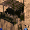
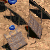

Patch 1.27 notes
All new units are removed from the game.
Added more bonuses to all civilizations.
 Improved Slinger, Heavy Slinger, Recurve Bowman, Heavy Camel Rider
Improved Slinger, Heavy Slinger, Recurve Bowman, Heavy Camel Rider
REMOVED
 Legion
Legion
Hit points 140 -> 160
Upgrade
Food cost 1400 -> 1000
 Medium Wall
Medium Wall
Hit points 300 -> 250
Upgrade
Food cost 180 -> 260
Patch 1.26 notes
Siege gameplay is reworked, Catapults are now available to all civilizations.
All civilizations get Ballistics.
 Tool Age
Tool Age
Requirement 2 Stone Age buildings -> Granary & Storage Pit
 Heavy Camel Rider (unit upgrade)
Heavy Camel Rider (unit upgrade)
Requirements Iron Age
Food cost 1300
Gold cost 500
Research time 150s
Effect:
Hit points 125 -> 180
Damage 6 -> 9
Bonus damage vs cavalry 4 -> 8
Slash armor 0 -> 3
Pierce armor 0 -> 1
Available Berbers, Carthaginian, Egyptian, Hittite, Minoan, Palmyra, Phoenician, Scythia, Sumerian
Patch 1.25 notes
All civilizations get unique technologies.
Reverting some economy changes, game starts were too monotone.
Multiple reverts and changes to match the new AOE:DE patch 46777.
 Unique Technology
Unique Technology
All civilizations will have one unique technology in Bronze Age.
Researched from Government Center, 60s research time, cost varies.
 Government Center
Government Center
Stone cost 250 -> 0
 Legion
Legion
Hit points 160 -> 140
 Improved Slinger, Heavy Slinger, Recurve Bowman
Improved Slinger, Heavy Slinger, Recurve Bowman
Enabled for AOE:DE
Patch 1.24 notes
Ballista is now available in Bronze Age.
Reverting all Farm changes for AOE:DE and creating different Farm balance for UPatch.
New units and civilizations for UPatch version of the game.
 Ballista
Ballista
Pierce damage 40 -> 30
Requirement Iron Age -> Bronze Age
Pierce armor 0 -> 1
 Recurve Bowman (Unit Upgrade)
Recurve Bowman (Unit Upgrade)
Requirements Iron Age, Alchemy, Composite Bow
Food cost 900
Wood cost 600
Research time 150s
Effect:
Hit points 45 -> 50
Pierce damage 5 -> 6
Nubia
New bonus All Temple technologies give bonus HP to Priests (Max 95 HP)
New bonus All units cost -10 wood
New bonus Gets +100 food on age up
Patch 1.23 notes
Follow up to economy balancing.
Patch 1.22 notes
Follow up to Stone Thrower changes and couple balance changes.
 Stone Thrower, Catapult & Heavy Catapult
Stone Thrower, Catapult & Heavy Catapult
Pierce armor 1 -> 2
 Alligator & Lion
Alligator & Lion
Food amount 100 -> 130
Food decay 1.0/s -> 0.2/s
Patch 1.21 notes
Big changes to economy.
 Gazelle
Gazelle
Food amount 150 -> 180
Food decay 0.25/s -> 0.2/s
Gazelles on big pack 6 -> 5
 Fisherman
Fisherman
Work rate 0.55 -> 0.4725
 Government Center
Government Center
Stone cost 0 -> 250
 Bracer
Bracer
REMOVED
Patch 1.20 notes
Few changes to early Tool Age.
Patch 1.19 notes
Changing red, orange, brown and purple player colors to make them more distinguishable.
Some reverts and balance changes.
 Villager
Villager
Hit points 35 -> 30
 Linen Cloth
Linen Cloth
Villagers bonus hit points +5 -> +10
Lion
Attack 3 -> 2
 Small Wall
Small Wall
Hit points 200 -> 120
Patch 1.18 notes
Changing the new units into technologies and some balance changes with few reverts.
 Heavy Slinger (REMOVED)
Heavy Slinger (REMOVED)
 Cross Bowman (REMOVED)
Cross Bowman (REMOVED)
 Bracer (new technology)
Bracer (new technology)
Requires Bronze Age
Food cost 125
Wood cost 60
Research time 60 seconds
Research location Government Center
Effect Foot archers and Slingers have +10 HP and +1 range
Available Assyrian, Carthaginian, Choson, Greek, Hittite, Roman, Sumerian
 Logistics
Logistics
New effect Barrack units get bonus slash armor equally to their pierce armor
 Elephant Archer
Elephant Archer
Attack base pierce 5 -> 6
Gold cost 45 -> 80
Patch 1.17 notes
AOE:DE has gotten a big patch (v38862) and it includes multiple tweaks and changes.
This patch includes some of those changes and a few new bonuses.
 Scout
Scout
Food cost 80 -> 100
Line of sight 8/10/12 -> 7/9/11
Pierce armor 0 -> 1
 Crossbowman
Crossbowman
Requires Bronze Age
Food cost 35
Gold cost 25
Hit points 45
Damage 4
Watch Tower
Hit points 100 -> 125
 Elephant Archer
Elephant Archer
Damage 6 -> 5
Gold cost 60 -> 45
 Gold mine
Gold mine
Gold amount 400 -> 450
Patch 1.16 notes
Few balance changes.
 Stone Thrower
Stone Thrower
Blast width 0.65 -> 0.7
Babylonian
Technologies enabled Iron Shield, Tower Shield
Choson
Bonus Axemen have +5 HP -> +10 HP
Hittite
Bonus Houses support an addition 2 headroom -> 1 headroom
Patch 1.15 notes
Multiple reverts and few balance changes.
 Slinger
Slinger
Food cost 50 -> 40
Lion
Attack base melee 3 -> 2
 Stone Thrower, Catapult & Heavy Catapult
Stone Thrower, Catapult & Heavy Catapult
Wood cost 140 -> 180
 Catapult Trireme & Juggernaught
Catapult Trireme & Juggernaught
Gold cost 75 -> 50
Wood cost 90 -> 135
Attack base melee 40 -> buildings 40
Patch 1.14 notes
Balancing water maps. Furthermore reverting changes.
 Dock
Dock
Work rate bonus at Stone Age +50% -> none
 Fisherman
Fisherman
Work rate 0.6 -> 0.55
Carry capacity 10 -> 20
 Camel Rider
Camel Rider
Hit points 135 -> 125
 Cavalry
Cavalry
Hit points 135 -> 125
Patch 1.13 notes
Nefing Villagers, furhermore increasing Swordsmen power.
 Villager
Villager
Hit points 40 -> 35
 Camel Rider
Camel Rider
Gold cost 30 -> 40
 Legion (upgrade)
Legion (upgrade)
Food cost 1400 -> 700
Gold cost 600 -> 300
Patch 1.12 notes
Changing Bronze Age fast units, furhermore nerfing Slingers.
 Slinger
Slinger
Movement speed 1.1 -> 1.0
Bonus damage vs mounted archers 4 -> 2
 Chariot Archer
Chariot Archer
Training time 55s -> 50s
Range 7 -> 6
Line of sight 9 -> 8
 Camel Rider
Camel Rider
Gold cost 60 -> 30
Hit points 125 -> 135
Training time 32s -> 40s
Cavalry damage 8 -> 4
 Cavalry
Cavalry
Pierce armor 0 -> 1
Hit points 150 -> 135
Patch 1.11 notes
Giving Villagers more survivability at early on. Removing Pottery.
 Villager
Villager
Hit points 35 -> 40
 Linen Cloth
Linen Cloth
Bonus hit points +10 -> +5
Food cost 60 -> 50
Wood cost 30 -> 25
 Pottery
Pottery
REMOVED
Patch 1.10 notes
Giving villagers some more base health making them tankier at Tool age but removing the Bronze Age villager technology. Slingers were still too strong. Now they are lesser unit on their own but can work well in conjunction with Axemen.
Much more reverts and changes to match AOE:DE
 Villager
Villager
Hit points 25 -> 35
Watch Tower
Attack base pierce 3 -> 4
Stone cost 120 -> 150
Upgrade
Research time 80s -> 10s
 Slinger
Slinger
Movement speed 1.2 -> 1.1
Reload time 1.5s -> 1.7s
Food cost 40 -> 50
Stone cost 15 -> 10
Patch 1.9 notes
Taking back phalanx buffs. Fast units movement speed penalty was still too huge.
Changing Wheel and Coinage to be same as in AOE:DE
 Hoplite, Phalanx & Centurion
Hoplite, Phalanx & Centurion
Movement speed 1.0 -> 0.95
 Nobility
Nobility
Bonus All cavalry units, chariots and Camel Rider +8% Movement speed -> +5% movement speed
 Sentry Tower
Sentry Tower
Hit points 125 -> 150
Patch 1.8 notes
New unit introduced: Bronze age slinger.
Multiple reverts and changes to match AOE:DE as well as some balance changes.
 Nobility
Nobility
Food cost 175 -> 250
Gold cost 120 -> 180
Bonus All cavalry units, chariots and Camel Rider +15% Movement speed -> +8% movement speed
 Heavy Slinger
Heavy Slinger
Requires Bronze Age, Logistics
Food cost 180
Gold cost 120
Research time 90 seconds
Research location Barrack
Effect Slingers +10 hit points, +1 range and +3 armor base melee
 Bowman
Bowman
Range 5 -> 6
Line of sight 7 -> 8
Training time 30s -> 26s
Patch 1.7 notes
Reverts and changes to match the DE version of the game.
 Chariot Archer
Chariot Archer
Training time 46s -> 55s
Hit points 63 -> 70 (revert)
 Cavalry (revert)
Cavalry (revert)
Hit points 140 -> 150
 Elephant Archer
Elephant Archer
Reload time 1.3 -> 1.5
Attack base pierce 5 -> 6
Patch 1.6 notes
Market upgrades have been reworked.
Market
Wood cost 150 -> 120
 Farmer
Farmer
Work rate 0.45 -> 0.4725
 Farm
Farm
Wood cost 75 -> 60
Food capacity 250 -> 175
Build time 24s -> 30s
Patch 1.5 notes
Villagers can now always kill a single lion.
Funneling is no longer a dominant multiplayer strategy.
 Hunter
Hunter
Accuracy 80% -> 100%
 Stone Thrower
Stone Thrower
Blast width 0.5 -> 0.6
 Coinage
Coinage
Tribute efficiency 100% -> 90%
Patch 1.4 notes
 Hoplite, Phalanx & Centurion
Hoplite, Phalanx & Centurion
Movement speed: 0.9 -> 0.95
 Aristocracy
Aristocracy
Movement speed: 0.225 -> 0.2375
Patch 1.3 notes
Scale armor infantry
Food Cost: 100 -> 125
Gold Cost: 50 -> 75
 Logistics
Logistics
Food Cost: 180 -> 220
Gold Cost: 100 -> 140
New bonus:All Barrack units deal bonus damage against towers
 Cataphract (upgrade)
Cataphract (upgrade)
Gold Cost: 750 -> 0
Wood Cost: 0 -> 900
Patch 1.2 notes
 Lion/Alligator
Lion/Alligator
Food amount 100 -> 130
Resource decay rate: 1.0 -> 0.4
 Nobility
Nobility
New bonus:All cavalry units, Chariots and Camel Rider +15% movement speed
Cavalry line, Scout, chariots, Camel Rider
Movement speed: 2.0 -> 1.74
 Horse Archer
Horse Archer
Movement speed: 2.2 -> 1.91
 Heavy Horse Archer
Heavy Horse Archer
Movement speed: 2.4 -> 2.09
Patch 1.1 notes
 Linen Cloth
Linen Cloth
Requires: Tool Age, Leather Armor Infantry
Cost: 40 Food, 75 Wood
Research time: 30 seconds
Research location: Town Center
Effect: Villagers +10 hit points and +1 armor base melee
Watch Tower
Build time: 72 -> 80
Reload time: 1.4 -> 1.3
Stone cost: 150 -> 135
 Scytche Chariot upgrade
Scytche Chariot upgrade
Wood cost: 800 -> 500
Gold cost: 550 -> 350
 siege ships
siege ships
Wood cost: 135 -> 90
Release notes
 Clubman
Clubman
Attack base melee: 3 -> 5
Reload time: 1.5 -> 2.5
 Wheel
Wheel
Villagers move: 65% faster -> 50% faster
Research time: 90s -> 50s
 Short Swordsman
Short Swordsman
Hit points: 60 -> 70
Attack base melee: 7 -> 8
 Improved Bowman
Improved Bowman
Hit points: 40 -> 35
Attack base pierce: 4 -> 5
Reload time: 1.4 -> 1.5
 Scythe Chariot
Scythe Chariot
Attack base melee: 9 -> 8
Armor base melee: 2 -> 1
Hit points: 120 -> 135
Upgrade:
Wood cost: 1200 -> 800
Gold cost: 800 -> 550
Research time: 150 -> 220
Metallurgy:
Attack base melee to Scythe Chariots: 3 -> 1